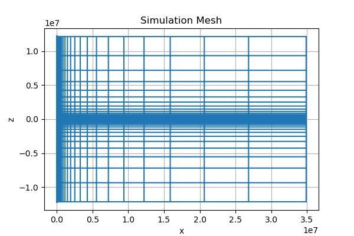
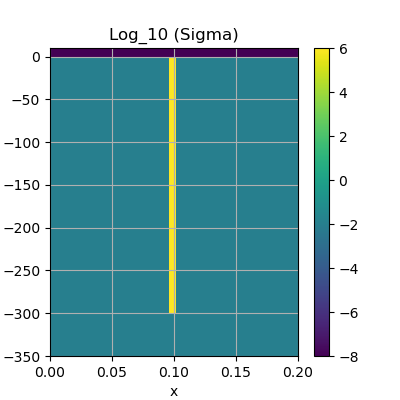
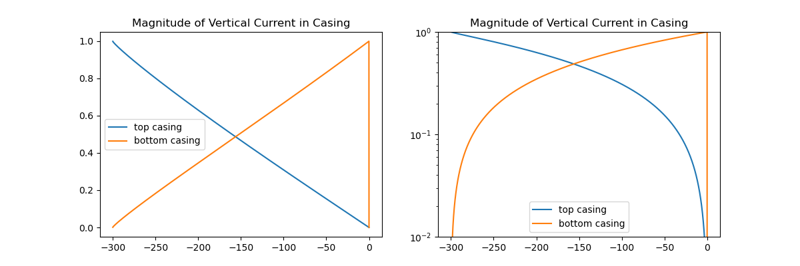

Note
Click here to download the full example code
EM: Schenkel and Morrison Casing Model¶
Here we create and run a FDEM forward simulation to calculate the vertical current inside a steel-cased. The model is based on the Schenkel and Morrison Casing Model, and the results are used in a 2016 SEG abstract by Yang et al.
Schenkel, C.J., and H.F. Morrison, 1990, Effects of well casing on
potential field measurements using downhole current sources:
Geophysical prospecting, 38, 663-686.
The model consists of:
Air: Conductivity 1e-8 S/m, above z = 0
Background: conductivity 1e-2 S/m, below z = 0
- Casing: conductivity 1e6 S/m
300m long
radius of 0.1m
thickness of 6e-3m
Inside the casing, we take the same conductivity as the background.
We are using an EM code to simulate DC, so we use frequency low enough that the skin depth inside the casing is longer than the casing length (f = 1e-6 Hz). The plot produced is of the current inside the casing.
These results are shown in the SEG abstract by Yang et al., 2016: 3D DC resistivity modeling of steel casing for reservoir monitoring using equivalent resistor network. The solver used to produce these results and achieve the CPU time of ~30s is Mumps, which was installed using pymatsolver
This example is on figshare: https://dx.doi.org/10.6084/m9.figshare.3126961.v1
If you would use this example for a code comparison, or build upon it, a citation would be much appreciated!
- 
- 
- 
Out:
Skin Depth: [5000000.0]
/usr/share/miniconda/envs/deploy/lib/python3.7/site-packages/discretize/utils/code_utils.py:176: FutureWarning: meshTensor has been deprecated, please use unpack_widths. It will be removed in version 1.0.0 of discretize.
FutureWarning,
/usr/share/miniconda/envs/deploy/lib/python3.7/site-packages/discretize/utils/code_utils.py:95: FutureWarning: CylMesh has been deprecated, please use CylindricalMesh. It will be removed in version 1.0.0 of discretize.
warnings.warn(message, FutureWarning)
/usr/share/miniconda/envs/deploy/lib/python3.7/site-packages/discretize/utils/code_utils.py:129: FutureWarning: CylMesh.vectorCCx has been deprecated, please use CylMesh.cell_centers_x. It will be removed in version 1.0.0 of discretize.
warnings.warn(message, FutureWarning)
/usr/share/miniconda/envs/deploy/lib/python3.7/site-packages/discretize/utils/code_utils.py:129: FutureWarning: CylMesh.vectorCCz has been deprecated, please use CylMesh.cell_centers_z. It will be removed in version 1.0.0 of discretize.
warnings.warn(message, FutureWarning)
Mesh Extent xmax: 30844847.844048,: zmin: -10732642.852316, zmax: 10732343.352316
Number of cells 878878
/usr/share/miniconda/envs/deploy/lib/python3.7/site-packages/discretize/utils/code_utils.py:157: FutureWarning: CylMesh.plotGrid has been deprecated, please use CylMesh.plot_grid. It will be removed in version 1.0.0 of discretize.
FutureWarning,
/usr/share/miniconda/envs/deploy/lib/python3.7/site-packages/discretize/utils/code_utils.py:157: FutureWarning: CylMesh.plotImage has been deprecated, please use CylMesh.plot_image. It will be removed in version 1.0.0 of discretize.
FutureWarning,
/usr/share/miniconda/envs/deploy/lib/python3.7/site-packages/discretize/utils/code_utils.py:129: FutureWarning: CylMesh.area has been deprecated, please use CylMesh.face_areas. It will be removed in version 1.0.0 of discretize.
warnings.warn(message, FutureWarning)
/usr/share/miniconda/envs/deploy/lib/python3.7/site-packages/discretize/utils/code_utils.py:129: FutureWarning: CylMesh.edgeCurl has been deprecated, please use CylMesh.edge_curl. It will be removed in version 1.0.0 of discretize.
warnings.warn(message, FutureWarning)
/usr/share/miniconda/envs/deploy/lib/python3.7/site-packages/discretize/utils/code_utils.py:157: FutureWarning: CylMesh.getEdgeInnerProduct has been deprecated, please use CylMesh.get_edge_inner_product. It will be removed in version 1.0.0 of discretize.
FutureWarning,
/usr/share/miniconda/envs/deploy/lib/python3.7/site-packages/discretize/utils/code_utils.py:157: FutureWarning: CylMesh.getFaceInnerProduct has been deprecated, please use CylMesh.get_face_inner_product. It will be removed in version 1.0.0 of discretize.
FutureWarning,
/usr/share/miniconda/envs/deploy/lib/python3.7/site-packages/discretize/operators/inner_products.py:69: FutureWarning: The invMat keyword argument has been deprecated, please use invert_matrix. This will be removed in discretize 1.0.0
FutureWarning,
/usr/share/miniconda/envs/deploy/lib/python3.7/site-packages/discretize/operators/inner_products.py:122: FutureWarning: The invMat keyword argument has been deprecated, please use invert_matrix. This will be removed in discretize 1.0.0
FutureWarning,
Time to solve 2 sources 11.107914924621582
from __future__ import print_function
import matplotlib.pylab as plt
import numpy as np
import discretize
from SimPEG import maps, utils
from SimPEG.electromagnetics import frequency_domain as FDEM
import time
try:
from pymatsolver import Pardiso as Solver
except Exception:
from SimPEG import SolverLU as Solver
def run(plotIt=True):
# ------------------ MODEL ------------------
sigmaair = 1e-8 # air
sigmaback = 1e-2 # background
sigmacasing = 1e6 # casing
sigmainside = sigmaback # inside the casing
casing_t = 0.006 # 1cm thickness
casing_l = 300 # length of the casing
casing_r = 0.1
casing_a = casing_r - casing_t / 2.0 # inner radius
casing_b = casing_r + casing_t / 2.0 # outer radius
casing_z = np.r_[-casing_l, 0.0]
# ------------------ SURVEY PARAMETERS ------------------
freqs = np.r_[1e-6] # [1e-1, 1, 5] # frequencies
dsz = -300 # down-hole z source location
src_loc = np.r_[0.0, 0.0, dsz]
inf_loc = np.r_[0.0, 0.0, 1e4]
print("Skin Depth: ", [(500.0 / np.sqrt(sigmaback * _)) for _ in freqs])
# ------------------ MESH ------------------
# fine cells near well bore
csx1, csx2 = 2e-3, 60.0
pfx1, pfx2 = 1.3, 1.3
ncx1 = np.ceil(casing_b / csx1 + 2)
# pad nicely to second cell size
npadx1 = np.floor(np.log(csx2 / csx1) / np.log(pfx1))
hx1a = utils.meshTensor([(csx1, ncx1)])
hx1b = utils.meshTensor([(csx1, npadx1, pfx1)])
dx1 = sum(hx1a) + sum(hx1b)
dx1 = np.floor(dx1 / csx2)
hx1b *= (dx1 * csx2 - sum(hx1a)) / sum(hx1b)
# second chunk of mesh
dx2 = 300.0 # uniform mesh out to here
ncx2 = np.ceil((dx2 - dx1) / csx2)
npadx2 = 45
hx2a = utils.meshTensor([(csx2, ncx2)])
hx2b = utils.meshTensor([(csx2, npadx2, pfx2)])
hx = np.hstack([hx1a, hx1b, hx2a, hx2b])
# z-direction
csz = 0.05
nza = 10
# cell size, number of core cells, number of padding cells in the
# x-direction
ncz, npadzu, npadzd = np.int(np.ceil(np.diff(casing_z)[0] / csz)) + 10, 68, 68
# vector of cell widths in the z-direction
hz = utils.meshTensor([(csz, npadzd, -1.3), (csz, ncz), (csz, npadzu, 1.3)])
# Mesh
mesh = discretize.CylMesh(
[hx, 1.0, hz], [0.0, 0.0, -np.sum(hz[: npadzu + ncz - nza])]
)
print(
"Mesh Extent xmax: {0:f},: zmin: {1:f}, zmax: {2:f}".format(
mesh.vectorCCx.max(), mesh.vectorCCz.min(), mesh.vectorCCz.max()
)
)
print("Number of cells", mesh.nC)
if plotIt is True:
fig, ax = plt.subplots(1, 1, figsize=(6, 4))
ax.set_title("Simulation Mesh")
mesh.plotGrid(ax=ax)
# Put the model on the mesh
sigWholespace = sigmaback * np.ones((mesh.nC))
sigBack = sigWholespace.copy()
sigBack[mesh.gridCC[:, 2] > 0.0] = sigmaair
sigCasing = sigBack.copy()
iCasingZ = (mesh.gridCC[:, 2] <= casing_z[1]) & (mesh.gridCC[:, 2] >= casing_z[0])
iCasingX = (mesh.gridCC[:, 0] >= casing_a) & (mesh.gridCC[:, 0] <= casing_b)
iCasing = iCasingX & iCasingZ
sigCasing[iCasing] = sigmacasing
if plotIt is True:
# plotting parameters
xlim = np.r_[0.0, 0.2]
zlim = np.r_[-350.0, 10.0]
clim_sig = np.r_[-8, 6]
# plot models
fig, ax = plt.subplots(1, 1, figsize=(4, 4))
im = mesh.plotImage(np.log10(sigCasing), ax=ax)[0]
im.set_clim(clim_sig)
plt.colorbar(im, ax=ax)
ax.grid(which="both")
ax.set_title("Log_10 (Sigma)")
ax.set_xlim(xlim)
ax.set_ylim(zlim)
# -------------- Sources --------------------
# Define Custom Current Sources
# surface source
sg_x = np.zeros(mesh.vnF[0], dtype=complex)
sg_y = np.zeros(mesh.vnF[1], dtype=complex)
sg_z = np.zeros(mesh.vnF[2], dtype=complex)
nza = 2 # put the wire two cells above the surface
# vertically directed wire
# hook it up to casing at the surface
sgv_indx = (mesh.gridFz[:, 0] > casing_a) & (mesh.gridFz[:, 0] < casing_a + csx1)
sgv_indz = (mesh.gridFz[:, 2] <= +csz * nza) & (mesh.gridFz[:, 2] >= -csz * 2)
sgv_ind = sgv_indx & sgv_indz
sg_z[sgv_ind] = -1.0
# horizontally directed wire
sgh_indx = (mesh.gridFx[:, 0] > casing_a) & (mesh.gridFx[:, 0] <= inf_loc[2])
sgh_indz = (mesh.gridFx[:, 2] > csz * (nza - 0.5)) & (
mesh.gridFx[:, 2] < csz * (nza + 0.5)
)
sgh_ind = sgh_indx & sgh_indz
sg_x[sgh_ind] = -1.0
# hook it up to casing at the surface
sgv2_indx = (mesh.gridFz[:, 0] >= mesh.gridFx[sgh_ind, 0].max()) & (
mesh.gridFz[:, 0] <= inf_loc[2] * 1.2
)
sgv2_indz = (mesh.gridFz[:, 2] <= +csz * nza) & (mesh.gridFz[:, 2] >= -csz * 2)
sgv2_ind = sgv2_indx & sgv2_indz
sg_z[sgv2_ind] = 1.0
# assemble the source
sg = np.hstack([sg_x, sg_y, sg_z])
sg_p = [FDEM.Src.RawVec_e([], _, sg / mesh.area) for _ in freqs]
# downhole source
dg_x = np.zeros(mesh.vnF[0], dtype=complex)
dg_y = np.zeros(mesh.vnF[1], dtype=complex)
dg_z = np.zeros(mesh.vnF[2], dtype=complex)
# vertically directed wire
dgv_indx = mesh.gridFz[:, 0] < csx1 # go through the center of the well
dgv_indz = (mesh.gridFz[:, 2] <= +csz * nza) & (mesh.gridFz[:, 2] > dsz + csz / 2.0)
dgv_ind = dgv_indx & dgv_indz
dg_z[dgv_ind] = -1.0
# couple to the casing downhole
dgh_indx = mesh.gridFx[:, 0] < casing_a + csx1
dgh_indz = (mesh.gridFx[:, 2] < dsz + csz) & (mesh.gridFx[:, 2] >= dsz)
dgh_ind = dgh_indx & dgh_indz
dg_x[dgh_ind] = 1.0
# horizontal part at surface
dgh2_indx = mesh.gridFx[:, 0] <= inf_loc[2] * 1.2
dgh2_indz = sgh_indz.copy()
dgh2_ind = dgh2_indx & dgh2_indz
dg_x[dgh2_ind] = -1.0
# vertical part at surface
dgv2_ind = sgv2_ind.copy()
dg_z[dgv2_ind] = 1.0
# assemble the source
dg = np.hstack([dg_x, dg_y, dg_z])
dg_p = [FDEM.Src.RawVec_e([], _, dg / mesh.area) for _ in freqs]
# ------------ Problem and Survey ---------------
survey = FDEM.Survey(sg_p + dg_p)
problem = FDEM.Simulation3DMagneticField(
mesh, survey=survey, sigmaMap=maps.IdentityMap(mesh), Solver=Solver
)
# ------------- Solve ---------------------------
t0 = time.time()
fieldsCasing = problem.fields(sigCasing)
print("Time to solve 2 sources", time.time() - t0)
# Plot current
# current density
jn0 = fieldsCasing[dg_p, "j"]
jn1 = fieldsCasing[sg_p, "j"]
# current
in0 = [mesh.area * fieldsCasing[dg_p, "j"][:, i] for i in range(len(freqs))]
in1 = [mesh.area * fieldsCasing[sg_p, "j"][:, i] for i in range(len(freqs))]
in0 = np.vstack(in0).T
in1 = np.vstack(in1).T
# integrate to get z-current inside casing
inds_inx = (mesh.gridFz[:, 0] >= casing_a) & (mesh.gridFz[:, 0] <= casing_b)
inds_inz = (mesh.gridFz[:, 2] >= dsz) & (mesh.gridFz[:, 2] <= 0)
inds_fz = inds_inx & inds_inz
indsx = [False] * mesh.nFx
inds = list(indsx) + list(inds_fz)
in0_in = in0[np.r_[inds]]
in1_in = in1[np.r_[inds]]
z_in = mesh.gridFz[inds_fz, 2]
in0_in = in0_in.reshape([in0_in.shape[0] // 3, 3])
in1_in = in1_in.reshape([in1_in.shape[0] // 3, 3])
z_in = z_in.reshape([z_in.shape[0] // 3, 3])
I0 = in0_in.sum(1).real
I1 = in1_in.sum(1).real
z_in = z_in[:, 0]
if plotIt is True:
fig, ax = plt.subplots(1, 2, figsize=(12, 4))
ax[0].plot(z_in, np.absolute(I0), z_in, np.absolute(I1))
ax[0].legend(["top casing", "bottom casing"], loc="best")
ax[0].set_title("Magnitude of Vertical Current in Casing")
ax[1].semilogy(z_in, np.absolute(I0), z_in, np.absolute(I1))
ax[1].legend(["top casing", "bottom casing"], loc="best")
ax[1].set_title("Magnitude of Vertical Current in Casing")
ax[1].set_ylim([1e-2, 1.0])
if __name__ == "__main__":
run()
plt.show()
Total running time of the script: ( 0 minutes 13.500 seconds)
Estimated memory usage: 1409 MB